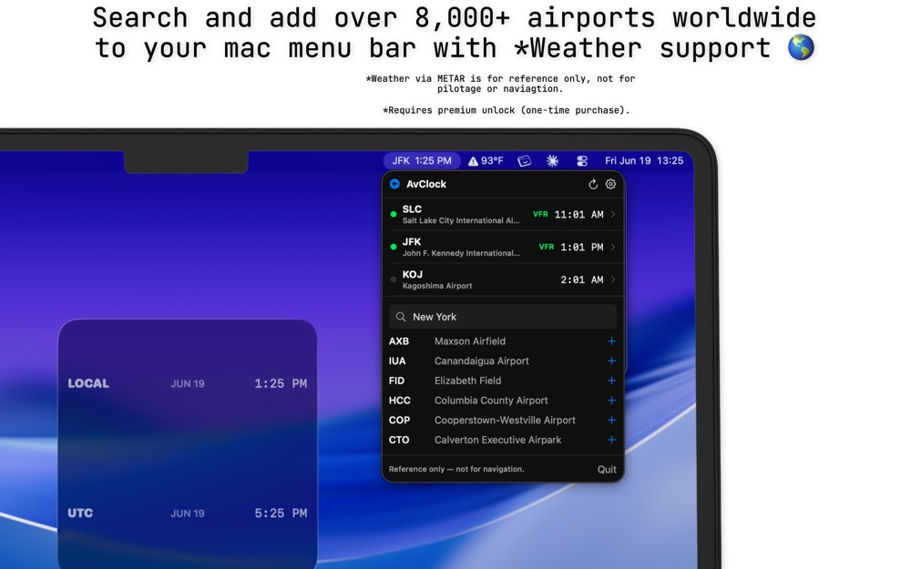

AvClock 1.6 for Mac: Choose What Your Menu Bar Shows
AvClock 1.6 for Mac is out. The headline change is small, and it makes a real difference if AvClock lives in your menu bar all day: you now choose what it shows up there.

Five Ways to Use Your Menu Bar
Here's what each choice puts in the menu bar, for a Friday afternoon in New York (1:25 PM there, 17:25 Zulu) with JFK and London Heathrow at the top of your list.
To change it, click AvClock in the menu bar, open Settings with the gear, and pick an option under Menu bar shows. "First" and "first two" follow the top of your list, so drag an airport to the top and the menu bar follows it. The 24-hour, seconds, and ICAO code settings apply up there too.
London is five hours ahead of New York in the example above, but only four for one week this month: Europe changes its clocks on October 25 and the US on November 1. AvClock keeps every airport right through both. More on that week.
Also in 1.6
The weather credit at the bottom of the menu now always shows, with a link to where the weather data comes from.
Everything Else the Mac App Does
- Your airports with live local time, sunrise and sunset, and full details: ICAO and IATA codes, city, country, coordinates, and time zone.
- Search all 8,798 airports by code, city, or state, or browse the airport map and add from there, with links to Apple Maps and Google Maps.
- Desktop and Notification Center widgets in small, medium, and large.
- 12- or 24-hour time, seconds, ICAO or IATA codes, Fahrenheit or Celsius, and launch at login.
- A built-in glossary that explains METAR, VFR, IFR, and other aviation terms in plain English.
- With Premium: VFR, MVFR, IFR, and LIFR flight-category weather in the menu and in widgets, weather alerts for your saved airports, and refresh on demand.
One Purchase, Every Device
AvClock for Mac is free, from the same App Store listing as the iPhone app. Premium is $4.99 once, not a subscription, and buying it on your iPhone, iPad, or Mac unlocks it on all three. The iPhone and iPad side just got its own update too: AvClock 1.9 is out.
AvClock is reference and informational only, not for flight planning, navigation, or pilotage. Always confirm with official sources (FAA, NOTAMs, charts, ATC).